La cerimonia
Chiesa da definire
La messa è alle 11:00. Comunicheremo presto il luogo esatto: sarà in zona, a breve distanza dal ricevimento.
Monica e Federico
Venerdì 28 maggio 2027
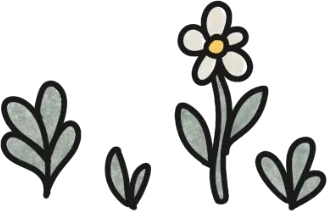
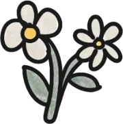
Ci sposiamo
Venerdì 28 maggio 2027
Il prossimo capitolo lo scriviamo insieme a voi.
Ci siamo conosciuti tra gli scaffali di una biblioteca. Da lì è iniziata una storia che raccontiamo qui, capitolo per capitolo.
Segnaposto. Due righe su come ci siamo conosciuti tra i libri.
Segnaposto. Una tappa importante del percorso insieme.
Segnaposto. Il momento in cui abbiamo deciso di sposarci.
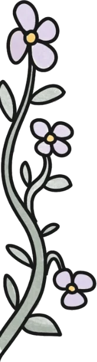
Una giornata tra i libri e il verde della cascina. Gli orari dopo la cerimonia li aggiorneremo appena tutto sarà confermato.
Chiesa da definire. Vi chiediamo di arrivare con qualche minuto di anticipo.
Finita la messa ci spostiamo tutti a Cascina Il Casale, a Inverigo. Aperitivo in giardino, pranzo e festa tra il verde.
Chiesa da definire
La messa è alle 11:00. Comunicheremo presto il luogo esatto: sarà in zona, a breve distanza dal ricevimento.
Cascina Il Casale
Inverigo (CO)
Ci si arriva subito dopo la messa: aperitivo, pranzo e festa si tengono qui. Parcheggio disponibile in loco.
Apri nel navigatore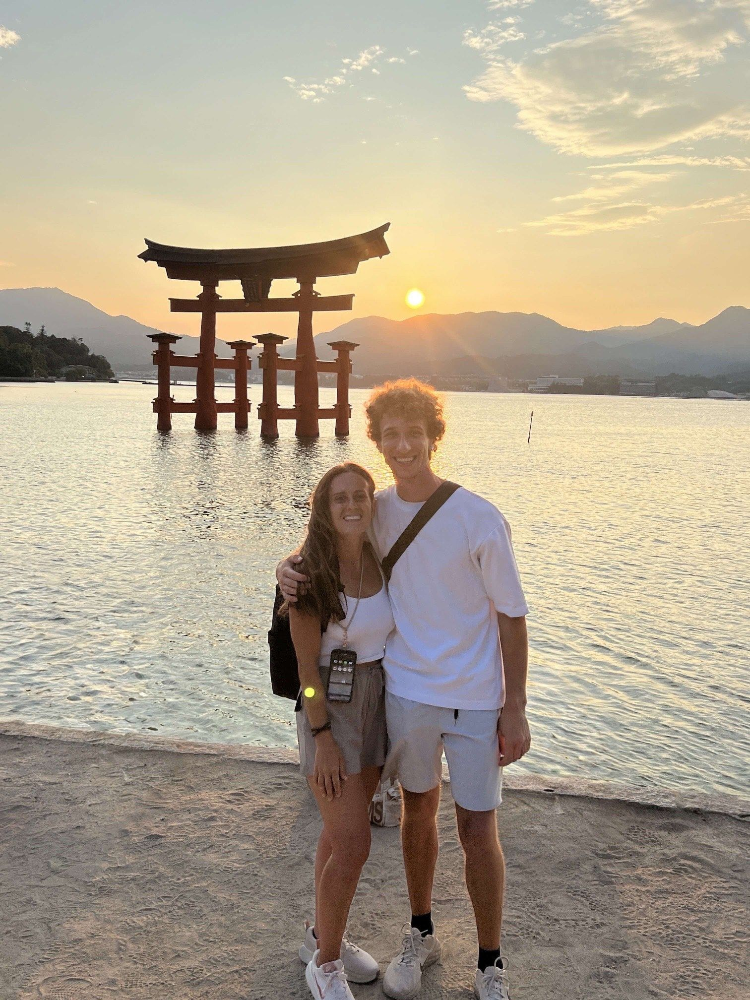
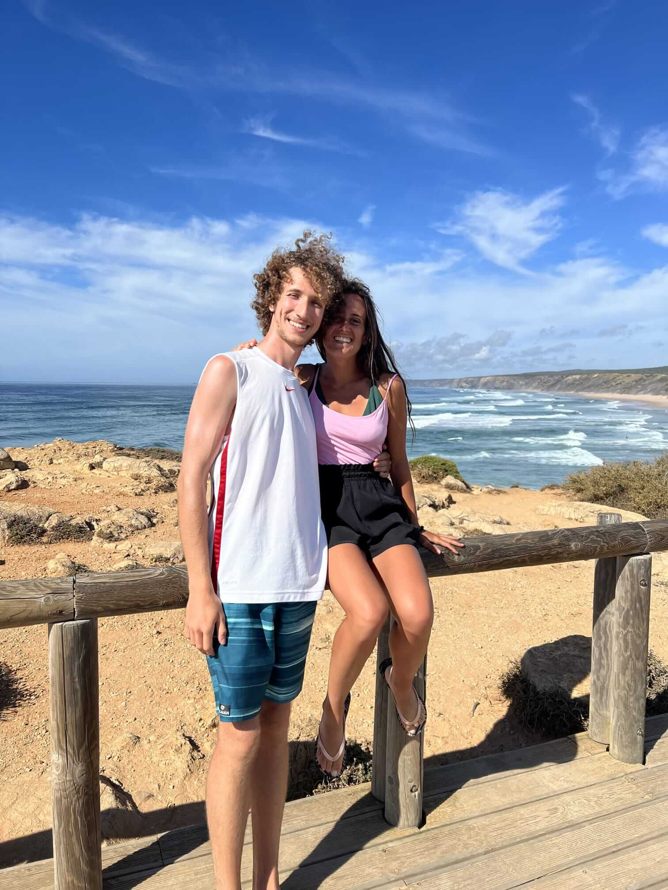
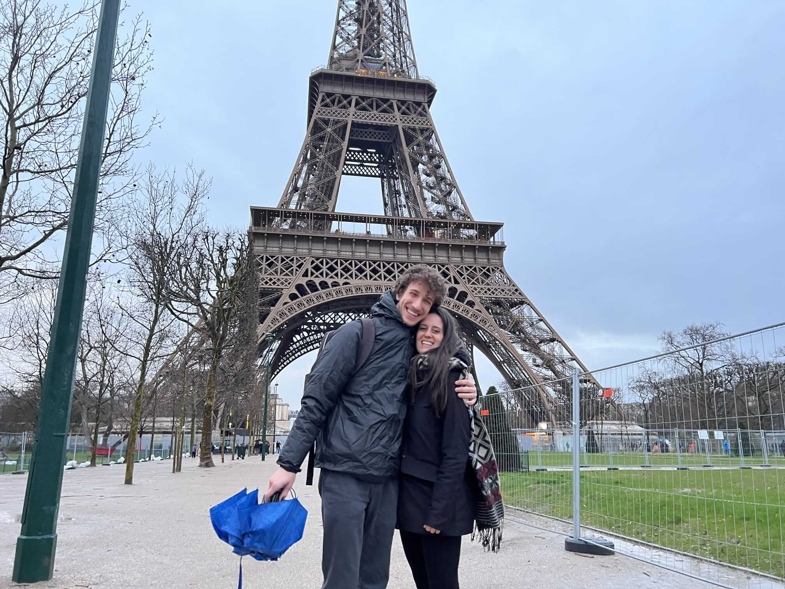
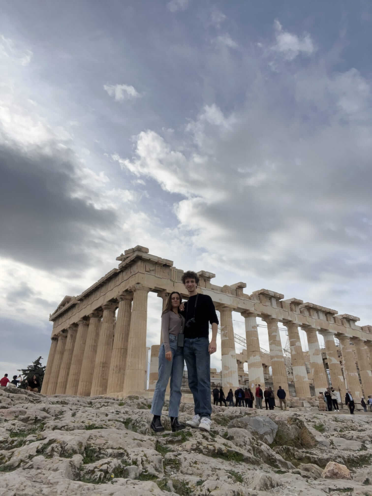
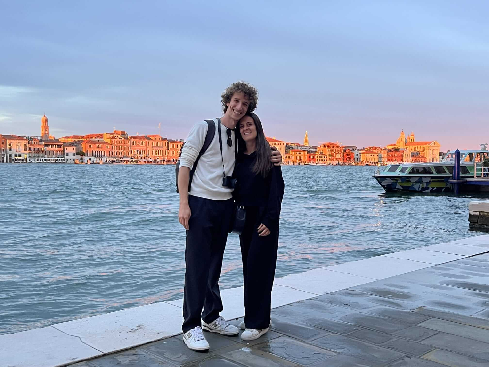
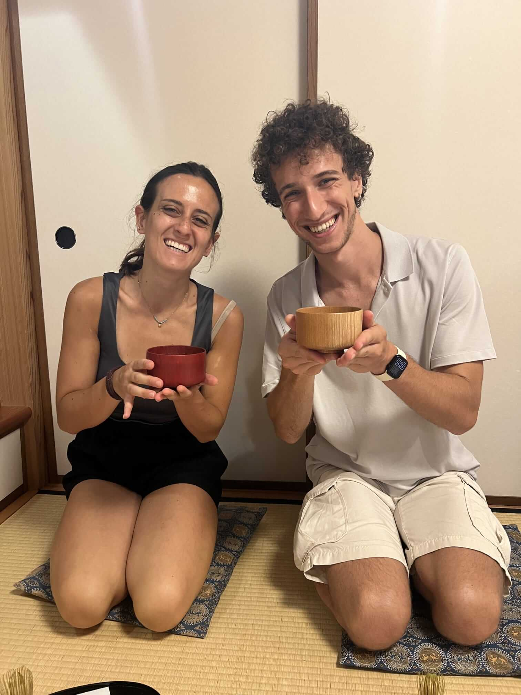
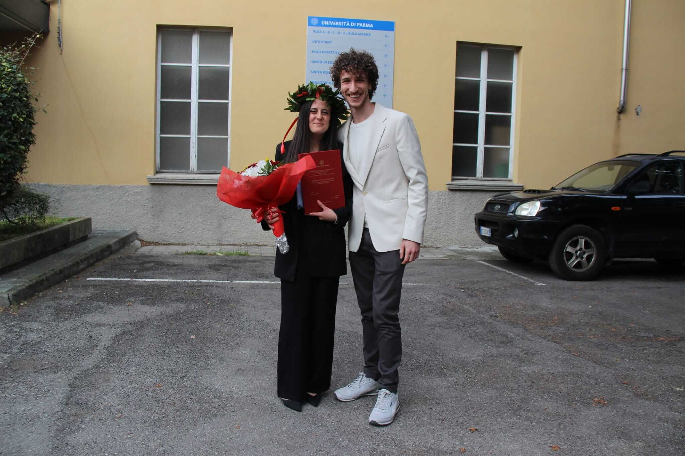
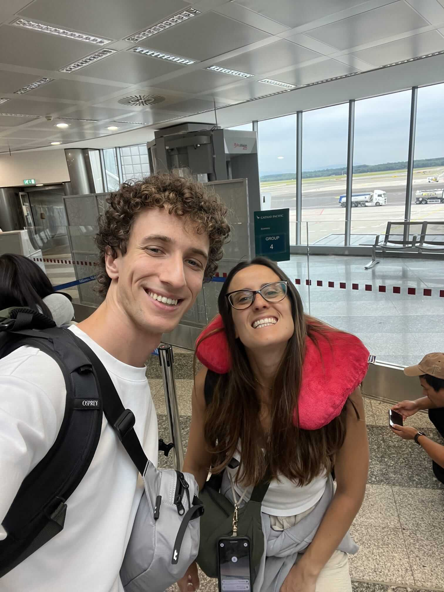
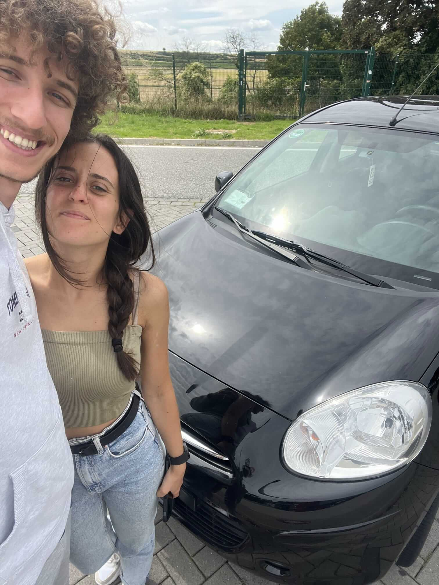
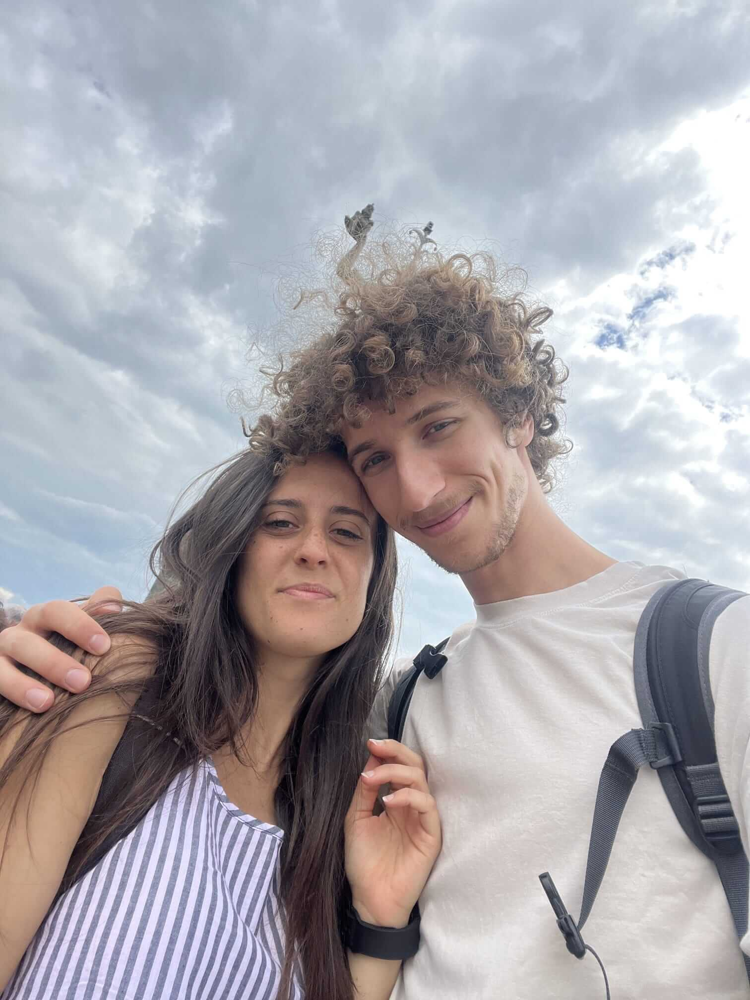
Un pensiero per noi
La vostra presenza è il regalo più grande. Non abbiamo una lista nozze: se volete farci un pensiero, potete usare l'IBAN qui sotto.
IT00 X000 0000 0000 0000 0000 000